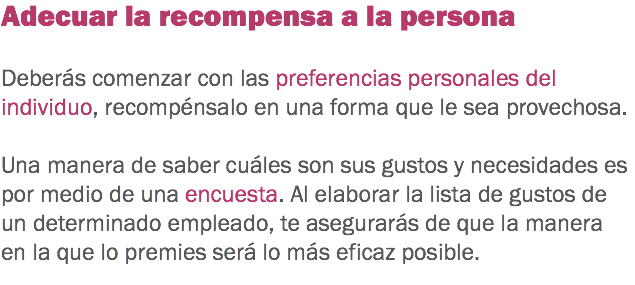
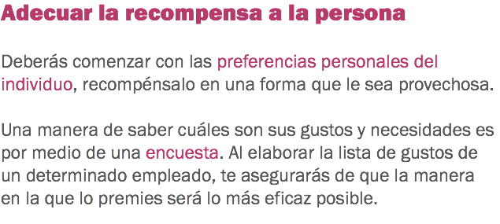
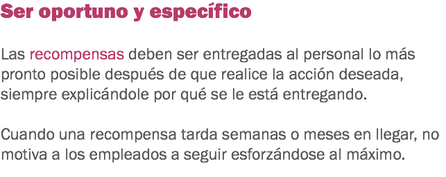
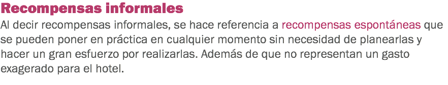
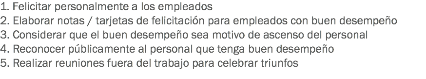
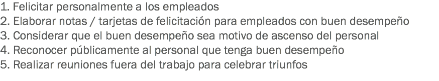
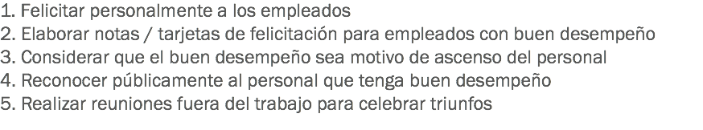

Motivar y retener al personal de hotelería

Recompensas para los empleados

 

![Adecuar el premio a lo logrado El esfuerzo en el área laboral, es una aptitud que se debe de notar diariamente, cuando un empleado se esfuerza en hacer su trabajo lo mejor posible, generalmente se obtienen resultados positivos. Al adecuar el premio a lo logrado, se debe de tener en cuenta cuánto significa lo que logró el empleado. No es lo mismo terminar un proyecto en el cual la persona invirtió un par de horas, que terminar uno en el que se le invirtieron dos años; razón por la cual la recompensa debe estar en función de la cantidad de tiempo que invirtió el empleado y por lo tanto el tiempo que tú tengas para planearla y ejecutarla, sin olvidar el dinero que se invertirá en esta recompensa.](images/u852-13.png)

x


 


x


x

Haz clic en Regresar para volver al inicio.